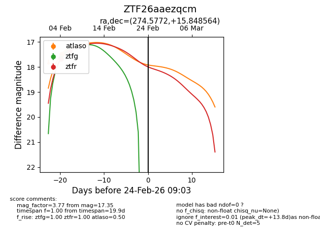
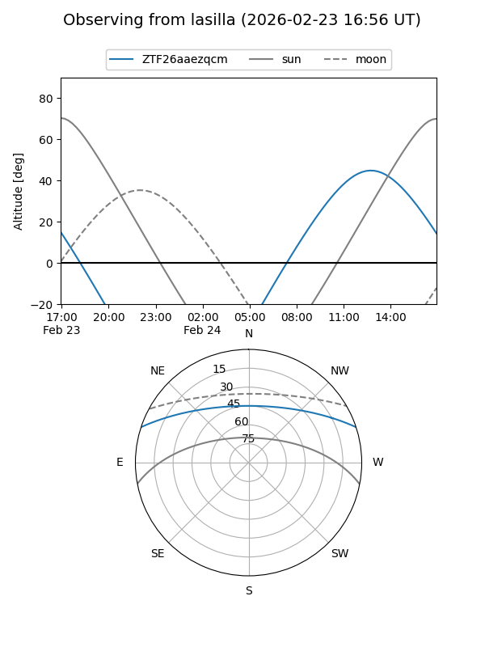
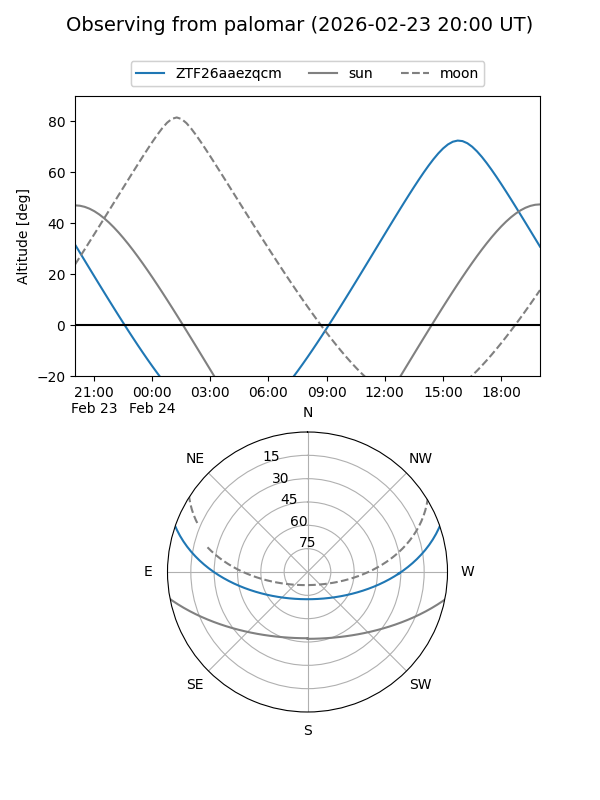
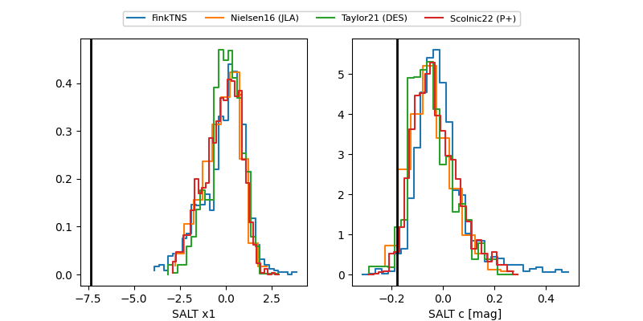

ZTF26aaezqcm
Target ZTF26aaezqcm at 2026-02-24 09:08
Aliases and brokers:
FINK: link
Lasair: link
ALeRCE: link
alt names
ZTF26aaezqcm (ztf,fink_ztf)
Coordinates:
equatorial (ra, dec) = 274.5772,+15.84856
equatorial (HMS+DMS) = 18:18:18.52,+15:50:54.83
galactic (l, b) = (43.6314,+14.35076)
Flags:
Photometry:
last atlaso=17.48, ztfg=17.29, ztfr=17.35
1 atlaso, 2 ztfg, 2 ztfr detections
Lightcurve

Visibility


Additional plots
